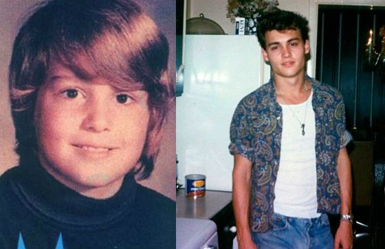

John Christopher Depp was born June 9th, 1963 in Owensboro Kentucky. For the most part Depps ancestry is mostly English, Dutch, and a little Belgian and French. During his childhood he moved alot from place to place; living in more than 20 different places, eventually settling in Miramar, Florida.
A few years after they settled in Florida, his parents got divored; his mom soon marrying Robert Palmer who he was called an "inspiration".